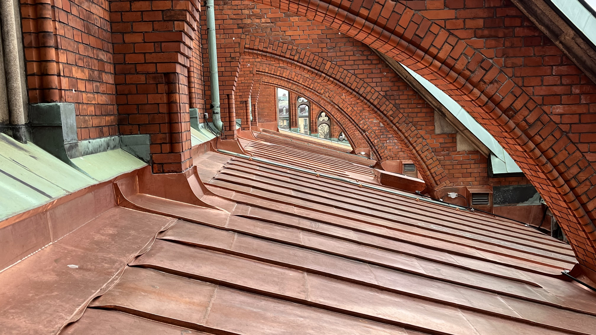
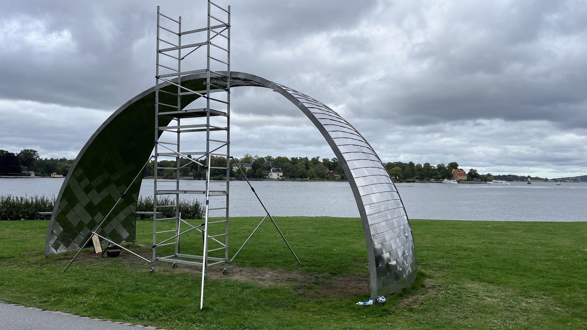

Byggnadsplåtslageri
Plåtarbeten för tak, fasader och byggnadens olika detaljer.
PLÅT- OCH KOPPARSLAGERI · STOCKHOLM
J. Norberg Plåtslageri arbetar med plåt och koppar på kulturhistoriska och arkitektoniska byggnader.

HANTVERK & PRECISION
Plåt- och kopparslageri kräver precision, erfarenhet och förståelse för byggnadens arkitektur. Vi arbetar med restaurering, nytillverkning och traditionella plåtdetaljer med respekt för byggnadens historia.
TJÄNSTER
Från restaurering av befintliga detaljer till nytillverkning och specialanpassade lösningar.
Plåtarbeten för tak, fasader och byggnadens olika detaljer.
Koppararbeten, beslag och detaljer för tak och fasader.
Restaurering och återskapande av befintliga plåt- och koppardetaljer.
Skräddarsydda detaljer och lösningar efter byggnadens förutsättningar.
AKTUELLT · 01
Plåthantverk behöver inte alltid följa byggnadens taklinjer. Här får material, form och hantverk mötas i ett konstnärligt projekt där den bearbetade metallen står i centrum.
Läs mer om projektet →
REFERENSER
Ett urval av arbeten inom plåt, koppar, restaurering och specialtillverkning.
OM J. NORBERG
J. Norberg Plåtslageri AB arbetar med plåt- och kopparhantverk med fokus på kulturhistoriska byggnader, restaurering och traditionella plåtdetaljer.
Med erfarenhet av både restaurering och specialtillverkning anpassas varje arbete efter byggnadens arkitektur, material och förutsättningar.
KONTAKT
Berätta vad du behöver hjälp med så återkommer vi.